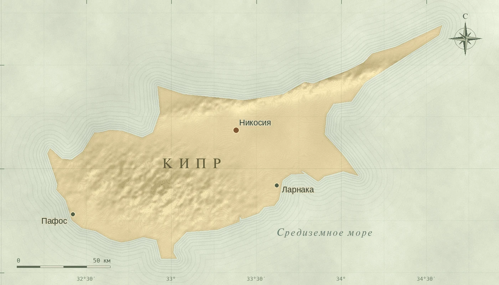

Еврокомиссия готовит доклад по Кипру
Для декабрьского Совета ЕС подготовлен информационный пункт о применении шенгенских правил на Кипре.
ПодробнееЕврокомиссия положительно оценила готовность Кипра. Совету ЕС ещё предстоит утвердить дату вступления.

Для декабрьского Совета ЕС подготовлен информационный пункт о применении шенгенских правил на Кипре.
ПодробнееКипр объявил тендер на €440 тысяч для установки кабин паспортного контроля в двух аэропортах.
ПодробнееНа саммите стороны договорились завершить выполнение протокола о британских суверенных базах на Кипре.
ПодробнееПо состоянию на 27 ноября 2026 года процесс вступления продолжается. По информации Еврокомиссии, Кипр участвует в шенгенском сотрудничестве, но Совет ЕС ещё не отменил контроль на внутренних границах.
Статус на сайте ЕврокомиссииРабочий прогноз мониторинга — 2027 год. Ориентир 1 июля отражает политическую позицию Греции; утверждённую дату нужно отличать от заявлений и прогнозов. Условия и возможные задержки разобраны в разделе прогноза.
Сценарии вступленияВ хронологии указаны даты событий, ссылки на источники и их уровень A–D. Документы, официальные заявления, публикации СМИ и аналитические выводы отмечены отдельно.
Хронология и источники